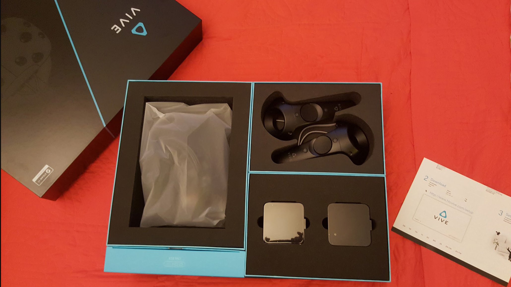

Vive HMD

I got one of these whenever it was that they went up for sale. I had a dk2 already. I wasn’t planning it, but I was on reddit or something and I saw this message about orders are open and just said fuck-it, I’m already on this spending train I might as well be an early adopter of this one too. This spendy style is not anything I had ever fostered previously, being mostly a cheap tight ass. But after a few months, I was kind of hooked on buying shit. Shopping by punching in some numbers and getting these boxes delivered like santa, it’s totally addictive. Unsustainable though, as I burned well past my high water mark I set for ‘hobby’ budget. This year, after I bought the gear 360 camera, I’ve cut myself off purchases until I can generate some revue with all this shit.
I installed the vive in my shed where my workstation was already. There were challenges getting space enough for ‘room scale’ experiences, even in the shed where there was a bit of room. I pushed all my shit all the way to the edges and eventually got there to the minimum clear space. I’d like to note it was also the winter time and the shed is not warm at all. This tempered the amount of time I actually have spent wearing this thing. Even now, months later, it’s still cold out there most of the time. I wear gloves and have a blanket when I’m out there working. I call it a shed, but it’s actually a one car garage. Some day soon-ish I’m building a new one, about the same size but I expect it to be somewhat warmer. This one is not well built and rotting away.
I installed all the free things I could find and shared it around with the family and friends. Tilt brush was the singular most engaging app by all accounts.
I have not used the Vive in while, for lack of time mostly but also because now there is a fridge in there taking up some space. Outside of using it for preview on my recent work stitching stereo in Nuke which I will post about soon, it’s been unused. Early adopting might have been a bad idea.
In terms of quality, it’s better than the dk2, but not by a factor. What was most impressive were the controllers. These are remarkably well tracked and functional.
There is no killer app that I have discovered, but I am intrigued most by graffiti simulator, which I think is still not available.